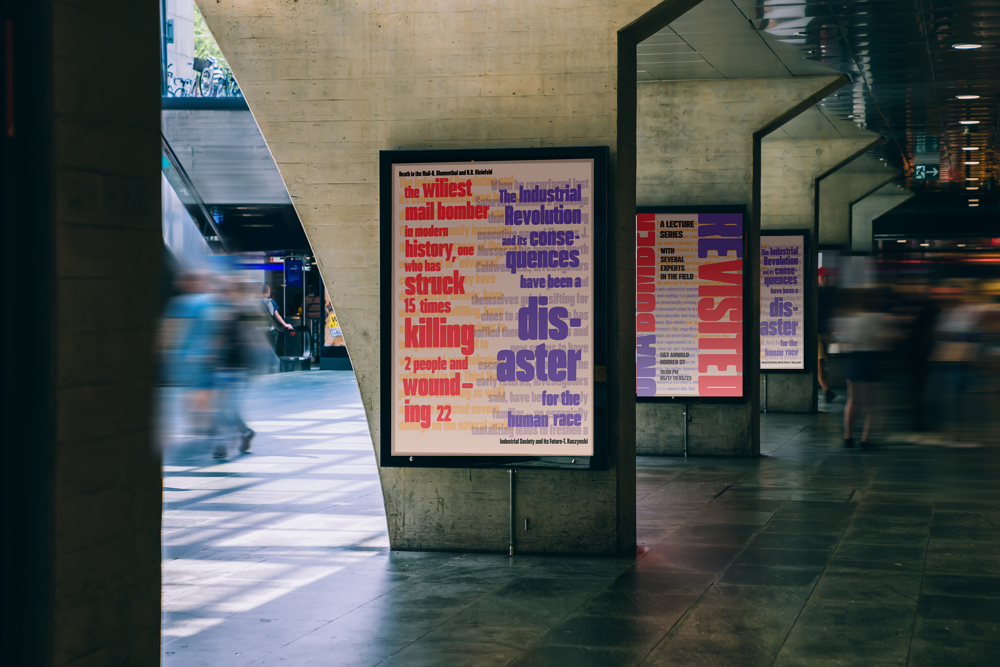
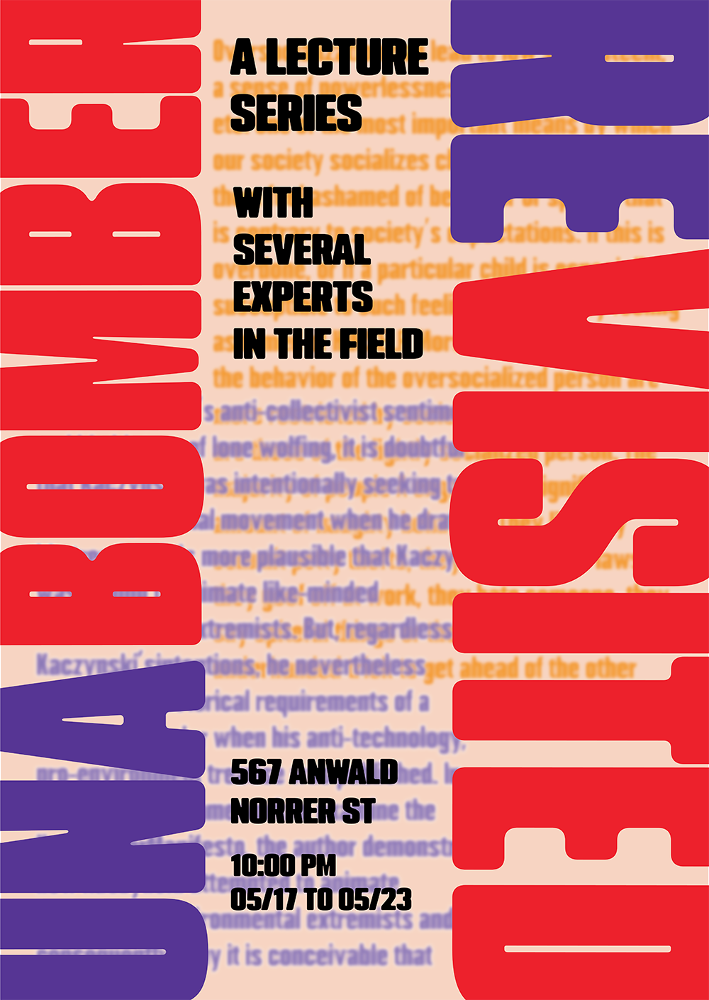

Manifesto Poster
This project resulted from a prompt to choose a manifesto and represent it typographically, then create a second poster advertising an event around it. I chose Ted Kaczinsky's "Industrial Society and Its Future",
colloquially known as the unabomber manifesto. I was interested in putting the words of his manifesto in direct conversation with the violence he perpetrated, as I believe there is an interesting contrast to be found here.
The event would be a lecture series discussing his body of work. The typefaces were chosen to emulate newsprint reporting at the time and to fit the strong language of the original manifesto.

